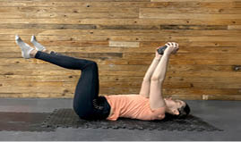
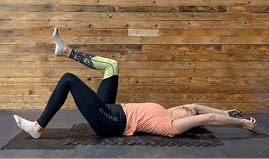

Aktywność fizyczna
3.4.7. Aktywacja skośnych łańcuchów mięśniowych – martwy robak
Aktywacja skośnych łańcuchów mięśniowych w pozycji stabilnego leżenia tyłem, tzw. martwy robak – wariant z obciążeniem (rycina V.3.12), to ćwiczenie angażujące mięśnie głębokie, mięśnie brzucha, skośne wentralne łańcuchy mięśniowe. Pomaga wzmocnić core i poprawić stabilizację tułowia:
Rycina V.3.12.
Martwy robak – wariant ćwiczenia aktywujący skośne łańcuchy mięśniowe i poprawiający stabilizację tułowia

428
